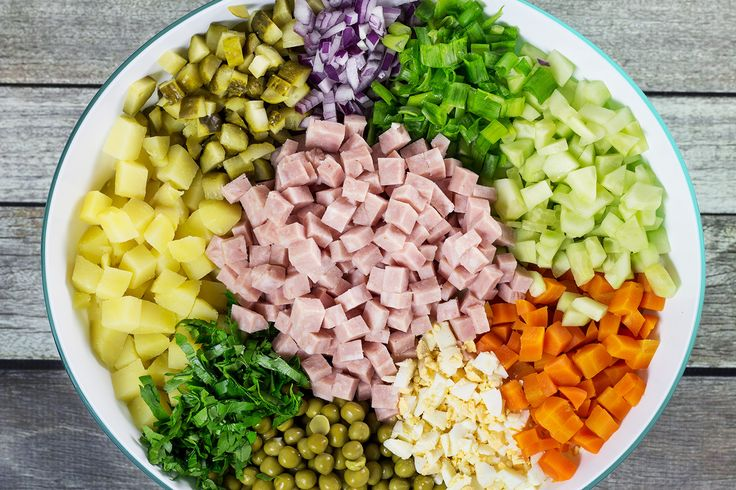

Olivier Salad

Description
Olivier salad is a traditional salad dish in Russian cuisine,
which is also popular in other post-Soviet countries and around the world.
Ingredients
- Chicken
- Mayonnaise
- Potato
- Egg
- Carrot
- Onion
- Ham
- Salt
- Pickled Cucumber
- Pea
- Black Pepper
- Dill
Steps
- Boil the Carrots, Potatoes, & Eggs - In a
large pot, boil the carrots and potatoes until they are easily
pierced with a fork. Next, boil the eggs. Set the ingredients
aside to cool at room temperature.
- Dice the Salad Ingredients - With a sharp
knife, dice the onions, carrots, potatoes, eggs, and bologna/ham
into small cubes. In a large bowl, mixed the finely diced ingredients
with the peas. Stir with a spoon until well-combined.
- Season and Cook - Season and cook, uncovered,
for about 15 mins, stirring now and again until the rice is
almost tender and still surrounded with some liquid.
- Toss with Dressing - Toss the salad ingredients
with the mayo and season to taste with salt and pepper. Optionally,
you can sprinkle in some fresh dill for a pop of flavor and color.
Enjoy!